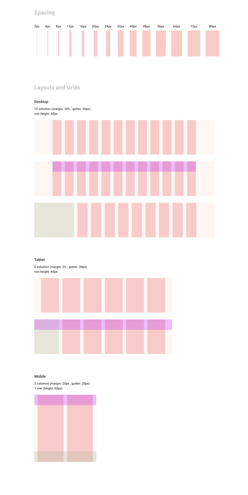
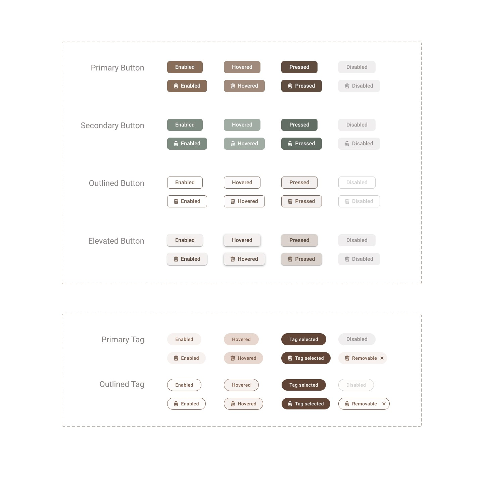
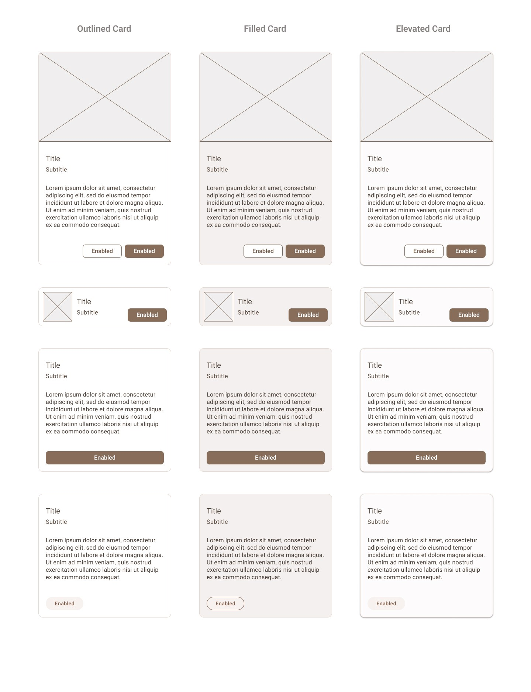
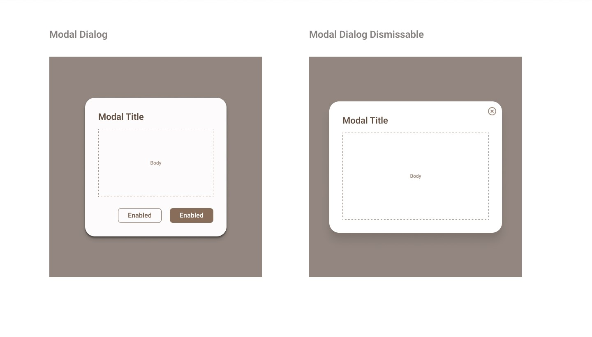

許多企業為了使開發與管理更有效率，會花大量精力製作設計系統。
而以個人來說，練習製作設計系統既能更好掌握 Figma 各功能如 Create Style、Component，製作中也能進一步提升色彩運用技巧、一致化介面元素風格等。
-
目的
-
透過明確的設計規範，提升製作效率。
-
統一視覺效果，提升使用者體驗。
-
方法
-
我在製作時以 Material Design 3 (M3) 為主框架，並參考許多不同的 Youtube 教學影片、Figma Community 內各式作品、跨國企業公開的 Design System 等。
| Style
設計當中最基礎的部分往往影響最大，必須將文字、色彩、格柵等定好規範。
Typography
(文字規範參考 M3)
色彩計畫
第一次製作，決定選擇自己喜歡的奶茶色，讓後續製作心情較愉悅
加入不同明暗度，並設置成 Color Styles，方便後續取用
格柵
間格以4或8的倍數為主。Columns 則用 CSS 常用的百分比標註邊界
陰影與圓角
| Component
Figma 元件功能強大，以前面設計的風格為基礎，設計各式元件，並定義其 Properties 讓之後運用起來更快速便利。
(不得不說，我真的很享受製作元件)
Icon 及 Icon Button
根據 M3 的繪製建議，自己製作線條與填滿兩種風格的 icon，建立元件以靈活運用在不同物件上
按鈕
製作主按鈕與不同型態的按鈕，做成同一元件組合，分類不同型態
控制元件
製作常用的 checkbox、radio button、toggle、slider
輸入項目
常用在表單或搜尋欄，製作 M3 元件互動過程會出現的 Enabled、Focused、Pressed、Error、Disabled 五種不同型態
Tab
卡片
網頁常以卡片堆疊各項資訊，因此設計不同卡片格式也是很有必要的！
蓋板樣式
除了卡片，也製作網頁中常運用到的蓋板
| Wrap Up 小結
想了解更多的話...
- 點擊連結進入 Figma： Design System
- "返回首頁" 觀看其他案例
起初對於這份 Design System 要做到多大、多精細還有些疑問，後來還是決定先以常見、常用的 UI 效果為主。即使目前成果不如長期投入其中的企業如 Google、Apple、Spotify、IBM 等完善，但 UI 設計中大部分內容都有涵蓋到，將來也能延用設計。
製作設計系統雖然耗費許多心力、並偶爾因看起來進度不佳而懷疑自我，但實際埋頭操作時還是蠻樂在其中的，每完成一個部分就得到滿滿成就感。
過程中在 Youtube 觀看前輩們的教學時，發現不同前輩風格大有不同。每個分享者也都有自己喜愛的外掛，尤其在設計色彩時，發現許多簡單好用的 Plugin，獲益良多！